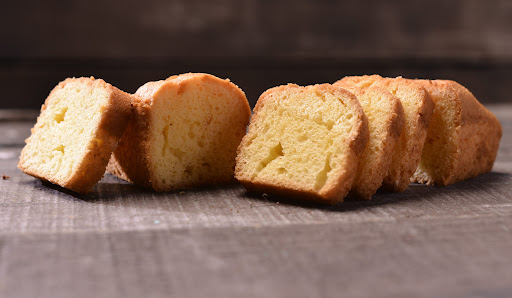

Ingredientes
- 275g de azúcar
- 225g de manteca
- 6 huevos
- 1 cucharada de esencia de vainilla
- 10g de Polve de hornear
- 1/2 ralladura de naranja y de limón
- 1/2 cucharada de sal fina
- 200ml de leche
Procedimiento
- Enmantecar el molde.
- Batir a punto blanco la manteca con el azucar, las ralladuras de citricos, la esencia de vainilla, la sal y la leche.
- Añadir los huevos y continuar batiendo hasta que se integren.
- Volcar la preparacion en el molde.
- Cocinar de 30 a 35 minutos en horno precalentado a 190°C.
- Reitrar, desmoldar y dejar enfriar sobre una rejilla.